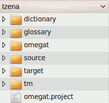

OmegaT-ren fitxategiak eta direktorioak
OmegaT-k hiru fitxategi-motarekin egiten du lan.
- Itzulpenaren proiektu-fitxategiak: Itzulpen-proiektu bat osatzen dute. Galduz gero, proiektuaren integritatea eta lana egiteko aukera murriztu daiteke. Proiektuaren fitxategiak fitxategirik garrantzitsuenak dira OmegaT-n. Eguneroko lanean erabiliko diren fitxategiak dira.
- Erabiltzailearen ezarpen-fitxategiak: Erabiltzaileak OmegaT-ren portaera aldatzeko hobespenak ezartzen dituenean sortzen diren fitxategiak dira. Haiek galduz gero, OmegaT-k ezarpen lehenetsiak erabiliko ditu. Honek arazo txiki batzuk sor ditzake itzulpen baten erdian gertatzen bada.
- Aplikazioaren fitxategiak: OmegaT instalatzeko deskargatu den paketean daude, eta gehienak ezinbestekoak dira OmegaT-k taxuz funtzionatu dezan. Fitxategi horiek galduz gero, deskargatu berriro edota instalatu berriro OmegaT.
Itzulpen-proiektuaren fitxategiak
OmegaT-ren itzulpen-proiektu bat hainbat fitxategi eta direktorioz osaturik dago.
Itzulpen-proiektuaren fitxategien kokapena
Itzulpen-proiektu bat sortzen denean, OmegaT-k automatikoki sortzen du fitxategien biltegi gisa erabiliko diren direktorioen zerrenda, bai eta proiektuaren hobespenak eta itzulpen-memoriak gordetzeko erabiliko diren hainbat fitxategi ere. Portaera lehenetsi gisa, itzulpen-proiektu baten direktorioak karpeta nagusi baten azpian bilduta gordetzen dira. Direktorio hauen kokapena aldatu egin daiteke, bai proiektua sortzean bai itzulpen-prozesuaren erdian. Hortaz, jadanik existitzen diren direktorioak hautatu daitezke, edo bakoitzaren lan-ohiturak islatzen dituzten direktorioak sortu daitezke. Proiektua sortu ondoren direktorioen kokapena aldatu nahi izanez gero, ireki <Proiektua sortu ondoren direktorioen kokapena aldatu nahi izanez gero, ireki Proiektua → Propietateak... eta egin beharrezkoak diren aldaketaks0>Proiektua → Propietateak... eta egin beharrezkoak diren aldaketak.
Itzulpen-proiektuaren fitxategien zerrenda
OmegaT-k irekitatko elkarrizketa-koadroan, itzulpen-proiektu bat OmegaT-ren ikonoa daukan fitxategi bat bezala erakusten da. Fitxategi-nabigatzaile batean, itzulpen-proiektuak beste edozein direktorioren itxura dauka.

OmegaT-ren ikonoa duen elementua hautatzea aski da proiektua irekitzeko. Ezarpen lehenetsiak mantenduz sortutako itzulpen-proiektu batek hurrengo egitura dauka:

Hasiera proiektu baten azpikarpetak hutsik egongo dira.
omegat
- omegat azpikarpetak hainbat fitxategi edukiko ditu, garrantzitsuena itzulpen-memoriaren fitxategia den project_save.tmx (...). project_save.tmx fitxategia proiektuaren lanerako itzulpen-memoria da. Automatikoki gordetzeko funtzioari esker, OmegaT-tik irtetean berez eguneratuko da. Fitxategi itzuliak sortzeko erabiltzen den itzulpen-memoria da. Geroago, azpikarpeta honetan project_save.tmx.<eguna eta ordua>.bak (...) formatua duten beste TMX fitxategi batzuk agertuko dira. Proiektuaren itzulpen-memoriaren babeskopiak dira eta proiektua berrirekitzen den bakoitzen sortzen dira, uneko saioak aldaketak egin baino lehen bertako edukiak ager daitezen.
- stats.txt fitxategiak (...) uneko proiektuaren estatistikak gordetzen ditu eta kalkulu-orri batean ireki daiteke, segmentuei eta hitzen zenbaketari buruzko informazioa erakusteko. Bertan gordetzen den informazioa Proiektuaren fitxategiak leihoan erakusten dena baino osatuagoa da. ignored_words.txt eta learned_words.txt fitxategiak, existitzen badira, ortografia-egiaztatzaileak erabiliko ditu.
source
- source azpikarpeta itzuliko diren fitxategiak gordeko diren tokia da. Azpikarpeta berriak sor ditzakezu eta proiektuari erantsi geroago, baita proiektuaren fitxategien leihotik ere. Kontuan izan source azpikarpetaren egitura edozein modutara alda dezakezula. Itzuli beharreko fitxategiak zuhaitz-egitura batean antolatuta badaude, goreneko azpikarpeta adierazita OmegaT-k egitura osoa kopiatuko du, zuhaitz-egitura aldaketarik gabe mantenduz.
target
- Proiektu bat irekita dagoenean Proiektua → Sortu dokumentu itzuliak hautatzen bada, /source/ karpetan dauden fitxategi guztiak, itzuliak egon zein ez, karpeta honetan birsortuko dira, karpeten hierarkia bera mantenduz, itzulpenaren uneko egoera islatzeko. Praktikan, OmegaT-k /omegat/project_save.tmx fitxategian gordetako informazioa eta sorburu-dokumentuak batzen ditu /target/ karpetan dauden edukiak sortzeko.
tm
- Aurretik egindako beste itzulpen batzuen itzulpen-memoriak azpikarpeta honetan utz daitezke. Itzulpenok tmx formatua eduki behar dute. Beste formatu batzuetatik bihurtzeko hainbat tresna daude. Kontuan izan project_save.tmx itzulpen-memoria dela, alegia, sorburuaren eta helburuaren arteko bitartekaria. Hala ere, TM fitxategi lagungarriak ere erabil daitezke itzuli gabeko segmentuetarako hautagai egokiak aurkitzeko.
omegat.project
- OmegaT-k fitxategi hau automatikoki sortzen du proiektua sortzen denean. Bertan proiektuaren parametroak gordetzen dira. Fitxategi honetan gordetako parametroak proiektuaren propietateen leihoan alda daitezke.
- proiektuarenizena-omegat.tmx (...)
proiektuarenizena-level1.tmx
proiektuarenizena-level2.tmx
- Fitxategi hauek /source/ karpetaren edukiei dagozkien segmentuen sorburua eta helburua gordetzen dituzte (betiere fitxategi itzuliak sortu diren unekoak).
Erabiltzailearen fitxategiak
Erabiltzailearen fitxategien kokapena
Erabiltzailearen fitxategiak kokapen berezi batean gordetzen dira, OmegaT-ren edozein bertsiorekin atzitu ahal izan daitezen. Kokapena erabiltzen duzun plataformaren araberakoa da:
|
Windows
|
- 2000 eta XP: Documents and Settings\<Erabiltzailearen izena>\Application Data\OmegaT
- Vista: Users\<Erabiltzailearen izena>\AppData\Roaming\OmegaT
- Beste batzuk: <Zerbait>\OmegaT (<Zerbait> "home" karpetaren kokapenari dagokio, betiere Javak zehaztu duen moduan.)
|
- Linux/Solaris/FreeBSD
|
- <Erabiltzailearen Home-a>/.omegat (.omegat direktorio bat da, aurretik daukan puntuak esan nahi du direktorioa ikusezina dela
ls -a edo pareko komando bat erabili ezean.)
|
- MacOSX
|
- <Erabiltzailearen Home-a>/Library/Preferences/OmegaT
|
- Beste batzuk
|
- <Erabiltzailearen karpeta nagusia>
|
Erabiltzailearen fitxategien zerrenda
- log.txt
|
- Fitxategi honek OmegaT erabiltzean sortutako Java-ren akats-mezuak gordetzen ditu. OmegaT modu bitxian ari dela uste baduzu, garrantzitsua da fitxategi hau edo bertako zatirik esanguratsuenak arazoen jakinarazpen batean bidaltzea OmegaT-ren taldeari.
|
- omegat.prefs
|
- Interfazean ageri diren ezarpen-aukera guztiak eta leihoen kokapenari buruzko datuak gordetzen dituen XML fitxategi bat.
|
- filters.conf
|
- Fitxategi-iragazkien hobespenetan ezarritako datu guztiak gordetzen dituen XML fitxategi bat.
|
- segmentation.conf
|
- Esaldien segmentazioaren hobespenetan ezarritako datu guztiak gordetzen dituen XML fitxategi bat.
|
Aplikazioaren fitxategiak
OmegaT SourceForge-ko gunetik deskarga daitekeen pakete gisa banatzen da. Kapitulu honetan plataformarekiko independentea den paketeaz arituko gara, aplikazioa Java forma estandarrean daukan paketeaz alegia. Beste paketeek fitxategi gehiago dauzkate: Linux-erako .tar pakete bat, Windows-erako instalatzaile bat (JRE batekin edo hori gabe), MacOSX-erako instalatzaile bat eta garatzaileentzako iturburu-kodearen pakete bat. Plataformarekiko independentea den pakete hau Java 1.5 Runtime Environment delakoa daukan edozein plataformatan erabili daiteke. Plataformarekiko independentea den pakete hau fitxategi trinko gisa banatzen da, erabiltzaileak berau desktrinkotu dezan instalazioa egin nahi duen karpetan. Destrinkotzea burutzeko, egin klik bi aldiz paketearen gainean. Destrinkotu ondoren, karpeta bat sortzen da hurrengo edukiekin:
|
File/
azpikarpeta
|
Edukiak
|
| /docs/ |
- Erabiltzailearen eskuliburuaren fitxategiak karpeta honetan daude. Interneteko nabigatzaile batean ireki daitezke, dokumentazio honen kanpo-estekak erabili nahi badira.
|
- /images/
|
- Hemen ikonoak eta logoak daude gordeta.
|
- /lib/
|
- Java fitxategiak hemen daude gordeta. Ezinbestekoak dira OmegaT-ren funtzionamendua zuzena izan dadin.
|
- join.html
|
- Hau HTML fitxategi arrunt bat da: hura nabigatzaile batean ireki ondoren, Yahoo Groups-en dagoen OmegaT-ren erabiltzaileen taldera eramaten du. Taldearekin bat egitea ez da beharrezkoa, baina zerbitzu gehiago eskuratzeko bidea da, hala nola zenbait fitxategi eta inkesta atzitzeko eta OmegaT-ri lotutako eztabaidetan parte hartzeko. Taldearen fitxategiak publikoak dira eta haiek kontsultatzeko ez da beharrezkoa taldean izena ematea.
|
- changes.txt
|
- Bertsio honen eta aurreko bertsioen artean egon diren aldaketen zerrenda xehea.
|
- license.txt
|
- GNU GENERAL PUBLIC LICENSE lizentzia. Lizentzia honek OmegaT-rekin zenbait gauza egitea ahalbidetzen du, hura moldatu eta birbanatzea barne. OmegaT aldatu edo banatzeko nahia badaukazu, irakurri ondo dokumentu hau eta ezer egin baino lehen, segurtatu inplikazio guztiez jabetzen zarela. Zalantzarik badaukazu, galdetu zuzenean taldeko kideei, bai posta bat bidaliz SourceForge-ko gunera, bai posta publiko bat bidaliz erabiltzaileen taldera.
|
- doc-license.txt
|
- GNU GENERAL PUBLIC LICENSE lizentzia. Lizentzia honek dokumentazioa babesten du. Ikus goian.
|
- readme.txt
|
- Fitxategi hau oso garrantzitsua da eta OmegaT-rekin lanean hasi baino lehen irakurri beharko zenuke. OmegaT-ri buruzko informazio orokorra dauka, informazio gehiago non aurkitu, nola lagundu, etab. Hainbat hizkuntzatara itzulita dago.
|
- OmegaT
|
- Bi lerro dituen testu-fitxategi normal bat:
#!/bin/bash
java -jar OmegaT.jar $*
Fitxategi hau erabilgarria izan daiteke komando-lerrotik exekutzeko moduan jartzen baduzu (chmod +x OmegaT), /OmegaT_2.0/ direktorioan zaudela egiaztatu ondoren. Aurrerantzean, OmegaT abiarazteko aski izango da fitxategi honi deitzea komando-lerrotik.
|
- OmegaT.bat
|
- OmegaT Windows-en komando-lerrotik abiarazteko erabiltzen den batch fitxategia. Hurrengo lerroa dauka:
java -jar OmegaT.jar %*
|
- OmegaT.jar
|
- OmegaT aplikazio nagusia. OmegaT abiarazteko, fitxategi hau komando-lerrotik deitu daiteke edo fitxategi-kudeatzailetik abiarazi daiteke (gainean bi aldiz klik eginez).
|